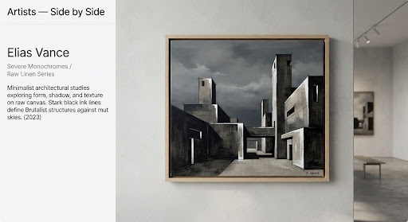
#AR-2026-001
한도윤 / DOYOUN HAN
SEOUL도시의 밤 [City of Night], 2024
Oil on Linen, 130×162cm
[REPRESENTED]
VIEW ARTWORK →
순수 회화, 웹툰, 시각 디자인, 사진, 설치 미술의 경계를 넘어 한 벽에 공존하는 100인의 창작자 아카이브.
CURATORIAL NOTE: SYNCHRONIC EXHIBITION DISCOURSE ON FAITH, URBAN SOLITUDE, AND CONTEMPORARY FORM.

도시의 밤 [City of Night], 2024
Oil on Linen, 130×162cm
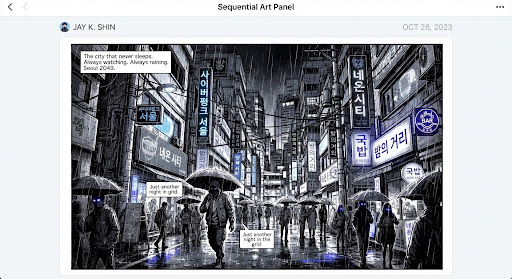
심야편의점 [Midnight Bodega], 2026
Digital Sequential / Webtoon, Episode 12 Frame
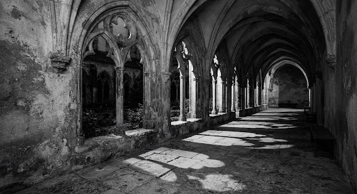
무제 (빛과 침묵) [Untitled (Light & Silence)], 2025
Archival Pigment Print, 100×140cm
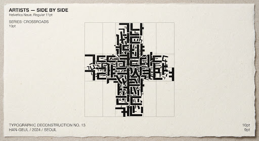
말씀의 골격 [Skeletal Word], 2025
Silkscreen on Hanji Paper, 90×120cm
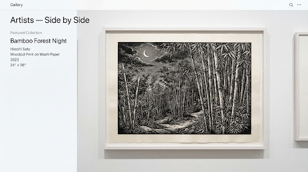
죽림묵상 [Meditation in Bamboo], 2023
Woodblock Print on Mulberry Paper, Edition 3/10
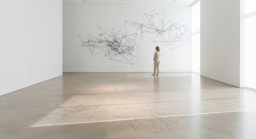
부유하는 성전 [Floating Sanctuary], 2025
Woven Steel Cable, Site-specific Installation
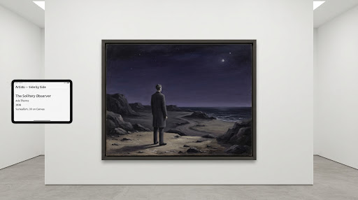
지평선의 증인 [Witness to Horizon], 2024
Oil on Canvas, 160×130cm
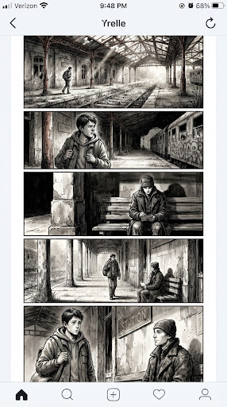
정거장의 기도 [Station Prayer], 2026
Sequential Narrative / Ink & Digital Wash
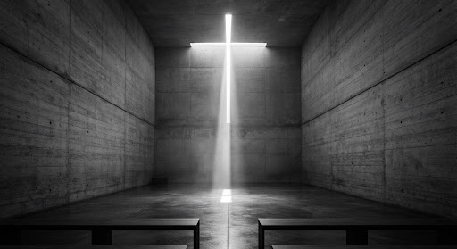
빛의 틈 [Fissure of Light], 2025
Gelatin Silver Print, 80×120cm
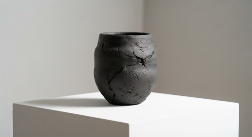
비움의 항아리 [Vessel of Emptiness], 2024
Unglazed Stoneware, 42×42×58cm
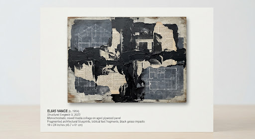
파편의 연대기 [Chronicle of Shards], 2025
Mixed Media on Wood, 120×150cm
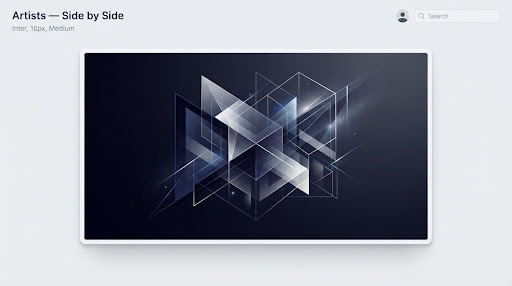
좌표계의 은총 [Grace of Coordinates], 2026
Generative Vector on Diasec, 110×110cm
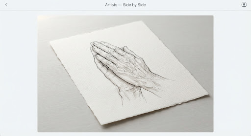
기도의 지문 [Fingerprints of Prayer], 2023
Sumi Ink on Arches Paper, 75×105cm
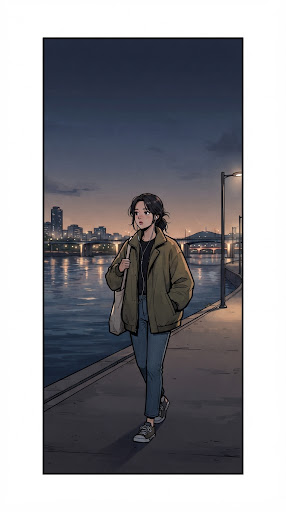
강변의 고백 [Riverbank Soliloquy], 2025
Digital Sequential / Archival Print, 60×120cm
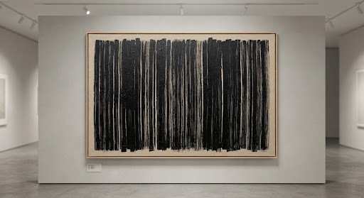
수직의 시간 [Vertical Time], 2024
Monochrome Acrylic on Canvas, 180×140cm
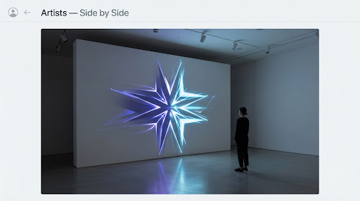
투영의 성소 [Sanctuary of Projection], 2026
Spatial Light Installation, Custom Software